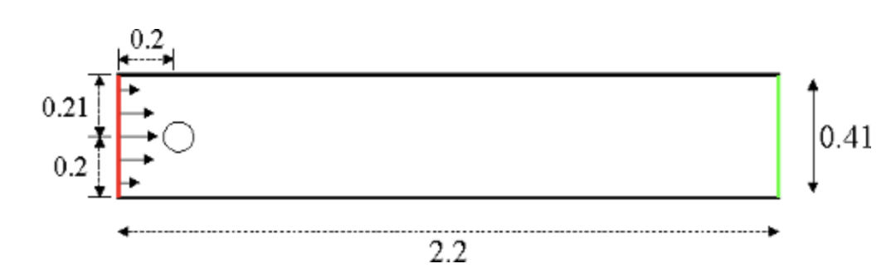

Unsteady Laminar Navier Stokes - DFG2 benchmark
The DFG2 benchmark is taken from the FeatFlow Repository. It’s 2D version of a Flow Over Cylinder Problem, able to observe Von-Karman vortex shedding.
{kind=link}
The governing equations are the Navier Stokes equations:
\[\begin{split}\left\{
\begin{array}{ll}
\nabla\cdot \mathbf{u} = 0 & \mathbf{x}\in\Omega\\
\frac{\partial \mathbf{u}}{\partial t} + \left(\mathbf{u}\cdot \nabla\right)\mathbf{u} -\nu \Delta \mathbf{u} + \nabla p = 0 & \mathbf{x}\in\Omega\\
\mathbf{u}=\mathbf{u}_{in},\;\; \frac{\partial p}{\partial \mathbf{n}} = 0 & \mathbf{x}\in\Gamma_{in} \\
\mathbf{u}=\mathbf{0},\;\; \frac{\partial p}{\partial \mathbf{n}} = 0 & \mathbf{x}\in\Gamma_{w} \\
\frac{\partial \mathbf{u}}{\partial \mathbf{n}}=0,\;\; p = 0 & \mathbf{x}\in\Gamma_{out}
\end{array}
\right.\end{split}\]
given \(\Omega\) as the domain and \(\partial\Omega\) as its boundary, composed by \(\partial\Omega = \Gamma_{in}\cup\Gamma_{w}\cup\Gamma_{out}\) where \(\Gamma_{in}\) is the inlet boundary, \(\Gamma_{w}\) is the wall boundary and \(\Gamma_{out}\) is the outlet.